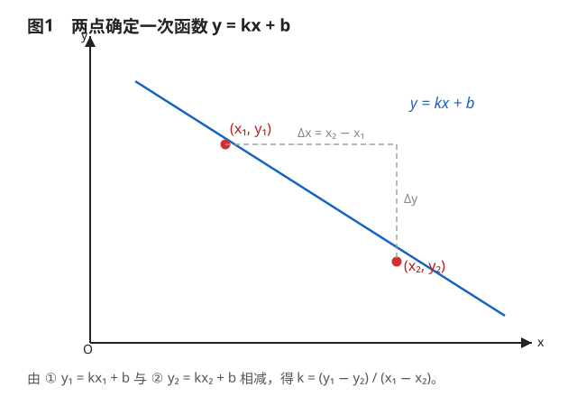
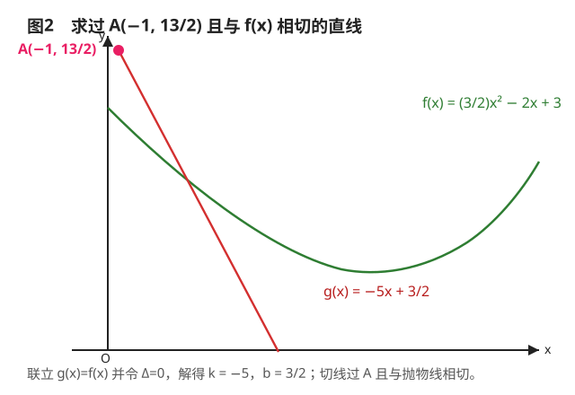
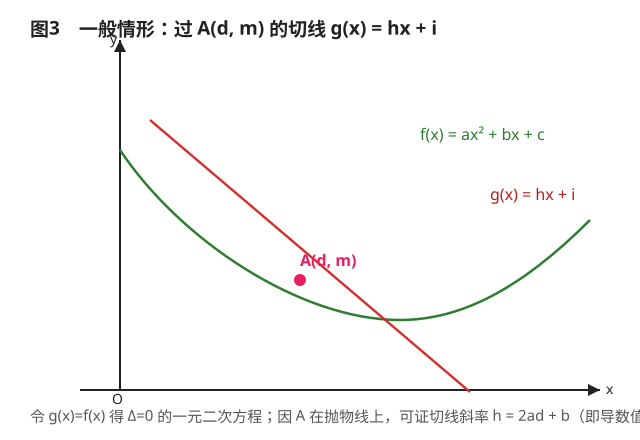

一元二次函数切线斜率求解公式（两点定线 · 抛物线切线 · 一般性结论证明）
Researcher: PHI-GAMMA
No.3 Middle School Science and Technology Innovation Academy (No.3 AS) · 研究员
（本文为Rubbish期刊精选类学术垃圾 · 第一届HGS奖）
本文通过纯代数方法，依次推导：① 两点确定一次函数的斜率与截距公式；② 抛物线在某点处切线斜率的具体求法；③ 对任意二次函数成立的一般性结论——它恰好等于微积分中的导数值。
第一部分：两点确定一次函数的公式推导
目标：已知直线上两点 $(x_1, y_1)$ 和 $(x_2, y_2)$，推导直线 $y = kx + b$ 中 $k$ 与 $b$ 的表达式。
1. 建立方程组。将两点坐标代入直线方程：
$$y_1 = kx_1 + b \quad\cdots\ ①,\qquad y_2 = kx_2 + b \quad\cdots\ ②$$
2. 求解斜率 $k$。用 ① 式减去 ② 式：
$$y_1 - y_2 = k\,(x_1 - x_2) \;\Longrightarrow\; k = \frac{y_1 - y_2}{x_1 - x_2}$$
3. 求解截距 $b$。将 $k$ 代入 ① 式，移项并通分：
$$b = y_1 - \frac{(y_1 - y_2)\,x_1}{x_1 - x_2} = \frac{y_1(x_1 - x_2) - x_1(y_1 - y_2)}{x_1 - x_2}$$
结论：对于经过 $(x_1, y_1)$ 与 $(x_2, y_2)$ 的一次函数 $y = kx + b$，其参数为
$$\boxed{\,k = \frac{y_1 - y_2}{x_1 - x_2},\qquad b = \frac{y_1(x_1 - x_2) - x_1(y_1 - y_2)}{x_1 - x_2}\,}$$

图1 两点确定一次函数：由 ① 与 ② 相减得斜率公式
第二部分：具体实例——求抛物线的切线
题目：已知二次函数 $f(x) = \tfrac{3}{2}x^2 - 2x + 3$，点 $A(-1, \tfrac{13}{2})$ 在图像上。求过点 $A$ 且与 $f(x)$ 相切的直线 $g(x) = kx + b$。
1. 验证点在曲线上。
$$f(-1) = \tfrac{3}{2}(-1)^2 - 2(-1) + 3 = \tfrac{3}{2} + 2 + 3 = \tfrac{13}{2}$$
确认 $A(-1, \tfrac{13}{2})$ 在抛物线上。
2. 联立方程与判别式条件。设切线为 $g(x) = kx + b$，联立 $g(x) = f(x)$：
$$kx + b = \tfrac{3}{2}x^2 - 2x + 3 \;\Longrightarrow\; \tfrac{3}{2}x^2 + (-k-2)x + (3-b) = 0$$
相切意味着判别式 $\Delta = 0$：
$$\Delta = (-k-2)^2 - 4 \cdot \tfrac{3}{2} \cdot (3 - b) = 0 \;\Longrightarrow\; (k+2)^2 - 6(3-b) = 0 \quad\cdots\ (\text{式I})$$
3. 利用点在直线上建立关系。直线过点 $(-1, \tfrac{13}{2})$，代入 $y = kx + b$：
$$\tfrac{13}{2} = -k + b \;\Longrightarrow\; b = \tfrac{13}{2} + k \quad\cdots\ (\text{式II})$$
4. 解方程组。将 (式II) 代入 (式I)：
$$(k+2)^2 - 6\Big[3 - \big(\tfrac{13}{2} + k\big)\Big] = 0 \;\Longrightarrow\; k^2 + 10k + 25 = 0 \;\Longrightarrow\; (k+5)^2 = 0$$
$$\therefore k = -5$$
5. 求 $b$ 并写出方程。代回 (式II)：$b = \tfrac{13}{2} + (-5) = \tfrac{3}{2}$。
$$\boxed{\,g(x) = -5x + \tfrac{3}{2}\,}$$

图2 过 $A(-1, 13/2)$ 与抛物线 $f(x)$ 相切的直线 $g(x) = -5x + 3/2$
第三部分：一般性结论证明
目标：证明对于任意二次函数 $f(x) = ax^2 + bx + c$，过其上一点 $A(d, m)$ 的切线 $g(x) = hx + i$，其斜率 $h$ 满足 $h = 2ad + b$。
1. 设定条件。抛物线与切点满足 $m = ad^2 + bd + c$；切线过点 $A$，故 $m = hd + i \Longrightarrow i = m - hd$。
2. 联立与判别式。令 $g(x) = f(x)$，即 $hx + i = ax^2 + bx + c$，整理得关于 $x$ 的一元二次方程：
$$ax^2 + (b - h)x + (c - i) = 0$$
相切意味着 $\Delta = 0$：
$$(b - h)^2 - 4a(c - i) = 0$$
3. 代入消元。把 $i = m - hd$ 代入并展开：
$$(b - h)^2 - 4a(c - m + hd) = 0 \;\Longrightarrow\; b^2 - 2bh + h^2 - 4ac + 4am - 4adh = 0$$
4. 整理为关于 $h$ 的方程。把含 $h$ 的项归类：
$$h^2 - (2b + 4ad)\,h + (b^2 - 4ac + 4am) = 0$$
即 $h^2 + ph + q = 0$，其中 $p = -(4ad + 2b)$，$q = b^2 - 4ac + 4am$。
5. 求解 $h$（利用求根公式）。计算判别式 $\Delta_h = p^2 - 4q$：
$$\Delta_h = (4ad + 2b)^2 - 4(b^2 - 4ac + 4am) = 16a\,(ad^2 + bd + c - m)$$
关键步骤：因点 $A(d, m)$ 在抛物线上，$m = ad^2 + bd + c$，即 $ad^2 + bd + c - m = 0$，故 $\Delta_h = 0$。
6. 得出结论。因为 $\Delta_h = 0$，方程有唯一解：
$$h = -\frac{p}{2} = \frac{4ad + 2b}{2} = 2ad + b$$
$$\boxed{\,h = 2ad + b\,}$$

图3 一般情形：过 $A(d, m)$ 的切线 $g(x) = hx + i$，$h = 2ad + b$
结论意义
这个证明通过纯代数方法（判别式法）推导出了二次函数 $f(x) = ax^2 + bx + c$ 在点 $x = d$ 处的切线斜率 $h = 2ad + b$。这正是微积分中导数 $f'(x) = 2ax + b$ 在 $x = d$ 时的取值——也就是说，在没有学过导数的情况下，仅用判别式也能"手搓"出切线的斜率，殊途同归。